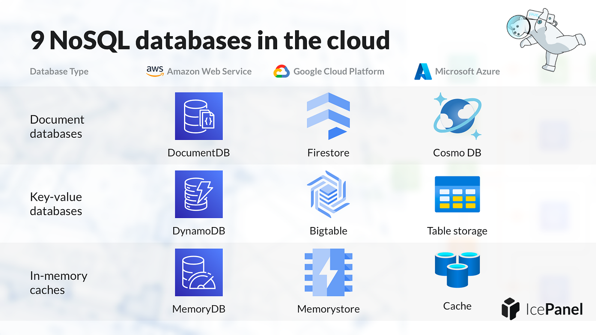

Module 10 — Modern & AI Data SystemsLecture 45Week 16
Cloud Databases
Aurora, BigQuery, Snowflake, and CockroachDB — managed, serverless, and globally distributed data systems
Learning Objectives
Explain the architectural innovations of Amazon Aurora (storage-compute separation, quorum writes)
Describe the columnar storage and massively parallel query execution model of BigQuery and Snowflake
State what CockroachDB's consensus replication provides and when to use it
Choose the appropriate cloud database for a given workload (OLTP, OLAP, multi-region)

Figure 45.1 — Cloud databases separate storage from compute, enabling independent scaling of each tier and pay-per-use pricing
1. The Shift to Cloud-Native Databases
Traditional DBMS design couples storage and compute on the same server. Cloud-native databases break this coupling: storage is provided by a distributed, durable storage layer (e.g., Amazon S3, Google Colossus), and compute (query processing) scales independently. This enables:
Elastic scaling: scale compute up or down in seconds without migrating data
Pay-per-use: pay only for data stored and queries executed (serverless model)
Operational simplicity: no DBA work for patching, backups, or failover — the cloud provider manages it
Global distribution: data replicated across regions with automatic failover
OLTP vs. OLAP in the Cloud
OLTP (Online Transaction Processing): many short read/write transactions; optimized for low latency on individual rows. Cloud examples: Aurora, Spanner, CockroachDB. OLAP (Online Analytical Processing): complex aggregation queries over billions of rows; optimized for throughput on full-table or partition scans. Cloud examples: BigQuery, Snowflake, Redshift.
2. Amazon Aurora
2.1 Architecture
Aurora is a cloud-native relational database that is MySQL/PostgreSQL-compatible. Its key architectural innovation is a shared distributed storage layer separate from the database engines. The storage layer is called the Aurora Storage and consists of a distributed pool of storage nodes across six availability zones in three AWS regions.
Aurora Storage Architecture:
- Data is split into 10 GB segments distributed across 6 storage nodes
- Each write is sent to all 6 nodes (Quorum: 4 of 6 must acknowledge)
- Read Quorum: 3 of 6 sufficient
Why quorum writes?
- Can tolerate 2 simultaneous AZ failures (lose 2 of 6 nodes)
- Redo logs only are sent to storage (not full pages) → network I/O 6× lower
- Storage nodes apply redo logs locally → no checkpoint needed in the engine
2.2 Aurora Innovations
Write once, read anywhere: the primary writes; up to 15 read replicas share the same storage (no replication lag for reads after quorum acknowledges write)
Aurora Serverless v2: compute capacity scales automatically in fractions of an ACU (Aurora Capacity Unit) within milliseconds; ideal for variable traffic
Aurora Global Database: sub-1-second replication lag across 5 global regions; failover in <1 minute
Aurora DSQL (2024): distributed SQL with multi-region active-active writes using optimistic concurrency
BigQuery is a fully managed, serverless, multi-tenant analytical (OLAP) data warehouse. It stores data in Capacitor — a proprietary columnar format on Google Colossus (distributed file system). There are no servers to provision; queries are executed by Dremel, Google's massively parallel query engine.
BigQuery execution model (Dremel tree):
Query → Root server → intermediate servers → leaf servers (scan Capacitor files)
Leaf servers read only the columns referenced in the query (column pruning)
Result is aggregated up the tree and returned to the client
Example: SELECT city, COUNT(*) FROM rides GROUP BY city
→ Only the 'city' column is read from storage (other columns untouched)
→ 1000 leaf servers scan in parallel → 1 billion rows in ~5 seconds
3.2 Key Features
Columnar storage + column pruning: only referenced columns are read
Serverless: no cluster to manage; pay per query (on-demand) or monthly flat rate (BigQuery editions)
Automatic partitioning: partition by DATE/TIMESTAMP or integer range; prune irrelevant partitions at query time
Clustering: sort data within each partition on up to 4 columns; scan only the relevant data blocks
BigQuery ML: train and run ML models (linear regression, k-means, XGBoost, LLMs via Vertex AI) using SQL
BigQuery best practices:
-- Partition and cluster to reduce data scanned
CREATE TABLE rides_2024
PARTITION BY DATE(trip_date)
CLUSTER BY city, vehicle_type
AS SELECT * FROM raw_rides WHERE trip_date >= '2024-01-01';
-- Query with partition pruning (scans only 2024 data)
SELECT city, SUM(fare_amount)
FROM rides_2024
WHERE trip_date BETWEEN '2024-01-01' AND '2024-03-31'
GROUP BY city;
4. Snowflake
4.1 Architecture
Snowflake is a cloud OLAP data platform with a three-layer architecture:
Virtual warehouses: independent compute clusters (each with its own cache); multiple warehouses share the same storage
Cloud services: metadata, query optimization, security, access control
Snowflake virtual warehouse sizes and credits:
X-Small (1 server) → 1 credit/hour
Small (2 servers) → 2 credits/hour
Medium (4 servers) → 4 credits/hour
Large (8 servers) → 8 credits/hour
X-Large (16 servers) → 16 credits/hour
Auto-suspend: warehouse suspends after N seconds of inactivity (billing stops)
Auto-resume: resumes within seconds when a query arrives (no warm-up)
4.2 Snowflake-Specific Features
Zero-copy cloning: instantly clone a database or table (metadata-only operation; no data copied until modified)
Time Travel: query data as it existed at any point in the past 90 days with AT (TIMESTAMP => ...)
Data Sharing: share live, read-only data with other Snowflake accounts with zero data copying
Snowpark: run Python/Java/Scala code directly inside Snowflake for ML feature engineering and model training
Iceberg tables: Snowflake manages Apache Iceberg tables on S3 — data remains open and portable
5. CockroachDB
5.1 Architecture
CockroachDB is an open-source, distributed SQL database designed for global OLTP with strong consistency. It is inspired by Google Spanner and uses the Raft consensus algorithm to replicate data across nodes.
CockroachDB data distribution:
Data → split into "ranges" (default 128 MB each)
Each range → replicated 3× across nodes (Raft quorum = 2 of 3)
Leaseholder: one replica per range handles reads/writes for that range
SQL → DistSQL engine → distributed across all nodes holding relevant ranges
Global consistency: every transaction uses HLC (Hybrid Logical Clock)
→ serializable isolation (no SSI anomalies) even across data centers
5.2 When to Use CockroachDB
Applications needing PostgreSQL-compatible SQL with horizontal scaling
Multi-region active-active: writes accepted in any region; raft replication keeps all regions consistent
Survival goals: survive a zone failure or a full region failure with automatic re-election of new Raft leaders
Zero-downtime rolling upgrades: the cluster continues serving traffic during version upgrades
6. Comparison: Cloud Database Landscape
Amazon Aurora
Type: Cloud-native OLTP (MySQL/PG compatible) Storage: Distributed Aurora Storage, 6-node quorum Scaling: Serverless v2; 15 read replicas Best for: Web apps, SaaS, replacing RDS MySQL/Postgres Not for: PB-scale analytics, complex data transformations
Google BigQuery
Type: Serverless OLAP data warehouse Storage: Capacitor (columnar) on Google Colossus Scaling: Fully automatic; serverless Best for: Ad-hoc analytics, BI, PB-scale queries, ML in SQL Not for: Low-latency OLTP, row-level mutations
Snowflake
Type: Cloud OLAP, multi-cloud Storage: Compressed columnar micro-partitions on S3/Azure/GCS Scaling: Virtual warehouses (independent compute clusters) Best for: Data warehousing, data sharing, multi-cloud analytics Not for: OLTP, streaming row-level updates
CockroachDB
Type: Distributed OLTP SQL (PostgreSQL-compatible) Storage: RocksDB on each node; Raft replication Scaling: Horizontal scale-out; add nodes online Best for: Global applications, multi-region ACID, financial systems Not for: Complex analytics, column-heavy aggregations
7. Architectural Patterns Comparison
Property
Aurora
BigQuery
Snowflake
CockroachDB
Workload
OLTP
OLAP
OLAP
OLTP
Storage format
Row (InnoDB/Heap)
Columnar (Capacitor)
Columnar micro-partitions
Row (RocksDB)
Compute scaling
Serverless v2 (auto)
Automatic (serverless)
Virtual warehouses (manual or auto)
Add nodes (manual)
Consistency
Strong (quorum)
Eventual (for DML)
Snapshot isolation
Serializable (Raft)
Multi-region
Global DB (secondary)
Multi-region datasets
Multi-region replication
Active-active (Raft)
SQL compatibility
MySQL / PostgreSQL
Standard SQL
ANSI SQL + extensions
PostgreSQL
8. Module 10 Summary
We have completed Module 10: Modern and AI Data Systems:
L42: NoSQL databases — key-value (Redis), document (MongoDB), wide-column (Cassandra), graph (Neo4j); CAP theorem; BASE vs. ACID
L43: Vector databases — embeddings, cosine/L2/inner-product similarity, HNSW and IVF ANN indexes, pgvector
You have now covered the full spectrum of database systems: from disk storage and buffer pools (M8) through B+ trees and hash indexes (M8), query processing and optimization (M9), ACID transactions and recovery (M9), to modern NoSQL, vector, and cloud databases (M10). The principles learned here — storage management, indexing, query execution, concurrency control, and distributed data — form the foundation for every data-intensive system you will build or operate.